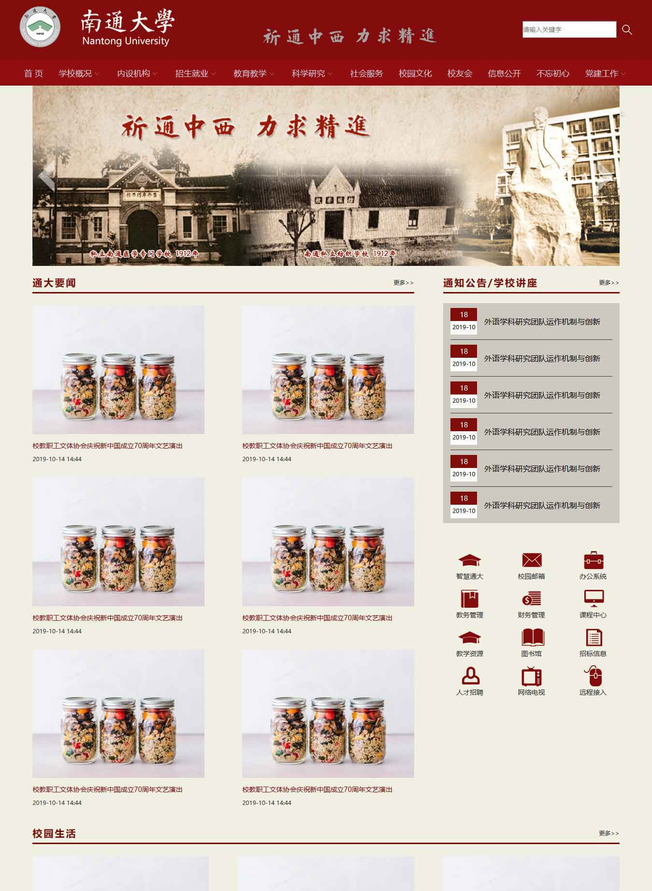

Project | My own projects
学校官网（仿站）

点击跳转源地址
技术&问题解决
- 响应式布局
-
在不同页面宽度下@media screen and (min-width / max-width: --px)，设置相对应的CSS样式，以及改变display:flex下弹性元素的width百分比，达到页面宽度自适应的响应式布局。
- CSS三角形
-
将元素border以内均设置为0，border-width设置CSS三角形的形状（锐角/钝角），border-color设置CSS三角形的方向和颜色（例如：三角向上，border-color： transparent，border-bottom-color： black)
- 焦点图切换
-
缓动动画效果切换焦点图，利用position：relative中的left实现焦点图切换效果。JS为轮播图添加index属性，并在轮播图末尾clone添加首张轮播图，通过条件判断达到无缝滚动效果。
- 背景图片定位
-
background-position对背景图片进行定位问题，关键字/数值定位与百分比定位的区别：关键字/数值定位时对于元素位置来设置图片位置，而百分比定位是将元素和图片上百分比位置相同的点对其。
展开
京东商城（仿站）
点击跳转源地址
技术&问题解决
- 页面布局
-
设置display：flex下弹性元素的width百分比，以及主轴（justify-content）和垂轴（align-items），实现元素的整齐分布效果。
- tab栏切换
-
双重tab栏切换，在html中搭建合理嵌套结构。JS中为每一级title设置index属性，实现不同title下的mouseover切换至对应的tab。
- 侧边栏显示/隐藏
-
利用position：fixed将侧边栏定位至页面某处，利用缓动动画通过改变left/right值来达到侧边栏显示/隐藏的平滑运动效果。
- 倒计时效果
-
设置活动结束时间，并获取当前时间，封装一个对时/分/秒分别进行计算的时间转换函数，并在setInterval（）之前调用一次，目的是消除页面重新加载时出现的时间空白。
- position & z-index
-
position = static时，元素遮盖方式处于正常文档流，即后来居上原则。而在position ≠ static时，元素的遮盖脱离文档流（即在正常文档流上方），z-index默认值为auto，不会自动创建本地堆叠上下文（即position ≠ static的元素实行后来居上原则）；创建本地堆叠上下文后，z-index将指定元素在当前堆叠上下文中的堆叠层级，同时创建一个新的本地堆叠上下文。
展开